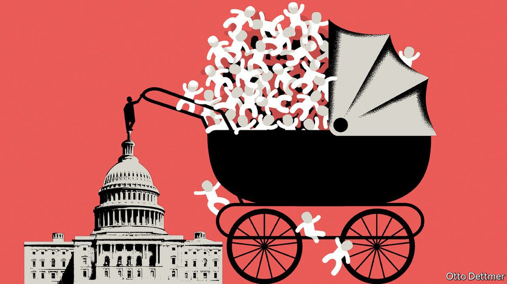

2021-09-27T15:29:31+00:00
Free exchange
自由交流
自由交流
How America should spend on child care
美国该如何安排儿童保育支出
美國該如何安排兒童保育支出
More money is not a guarantee of success
多花钱不一定能办成事
多花錢不一定能辦成事

UNLIKE MOST rich European countries, America lacks a coherent public child-care regime. But it has come surprisingly close to having one. During the second world war Congress set up federal child-care centres to encourage women to work in factories; these were later dismantled. In 1971 Congress passed a comprehensive child-care plan. But President Richard Nixon vetoed the bill, calling it “the most radical piece of legislation” to have crossed his desk, and arguing that “good public policy requires that we enhance rather than diminish both parental authority and parental involvement with children.” Now Democrats in Congress are trying again, fashioning a child-care system as part of an enormous social-spending package. It is expected to consist of a universal pre-kindergarten programme for three- and four-year-olds and free or heavily subsidised child care for most Americans. The potential gains from more systematic support are large. But there are trade-offs around its design, too.
与大多数欧洲富裕国家不同，美国缺乏一个连贯一致的公共儿童保育体系。但它其实离建成这样一个体系极为接近。第二次世界大战期间，为鼓励妇女去工厂工作，国会建立了很多联邦托育中心；这些中心后来被拆除。1971年，国会通过了一项全面儿童保育计划。但总统尼克松否决了该法案，称它是自己经手的“最极端的法案”，并声称“好的公共政策要求我们加强、而不是削弱父母的威信以及他们对抚育子女的参与”。现在，国会中的民主党人正再次尝试建立儿童保育体系，把它纳入庞大的社会支出计划中。预计该体系将包括一项面向所有三、四岁幼儿的托育计划，以及为大多数美国人提供免费或有高额补贴的儿童保育服务。更系统化的支持可能带来巨大的益处。但它的具体设计仍需要权衡取舍。
與大多數歐洲富裕國家不同，美國缺乏一個連貫一致的公共兒童保育體系。但它其實離建成這樣一個體系極為接近。第二次世界大戰期間，為鼓勵婦女去工廠工作，國會建立了很多聯邦托育中心；這些中心後來被拆除。1971年，國會通過了一項全面兒童保育計劃。但總統尼克松否決了該法案，稱它是自己經手的“最極端的法案”，並聲稱“好的公共政策要求我們加強、而不是削弱父母的威信以及他們對撫育子女的參與”。現在，國會中的民主黨人正再次嘗試建立兒童保育體系，把它納入龐大的社會支出計劃中。預計該體系將包括一項面向所有三、四歲幼兒的托育計劃，以及為大多數美國人提供免費或有高額補貼的兒童保育服務。更系統化的支持可能帶來巨大的益處。但它的具體設計仍需要權衡取捨。
The case for some sort of state intervention is straightforward. As any new parent will readily confirm, child care across the rich world is eye-wateringly expensive. Women are disproportionately likely to stay at home to look after their children, so encouraging them to work in the formal sector could increase gender equality. For some children, formal care doubles up as education, helping overcome the disadvantages associated with their family circumstances. Some public spending on child care has such vast benefits in later life that in broad terms it is an investment that pays for itself. Research led by James Heckman of the University of Chicago, for instance, has found that spending on some high-quality programmes for children from birth until their fifth year generated an internal rate of return of 14%.
做出某种国家干预的理由很简单。在所有富裕国家，儿童保育费用高得令人瞠目，所有新手爸妈对此都深有感触。有太多女性可能要留在家里照顾孩子，鼓励她们进入正式部门工作可以促进性别平等。对一些孩子来说，正规的看护也可以起到教育的作用，有助消除家境造成的劣势。一些用于儿童保育的公共支出日后会带来巨大的好处，因而从大体上说堪称稳赚不赔的投资。例如，由芝加哥大学的詹姆斯·赫克曼（James Heckman）主持的研究发现，一些为从出生到五岁的儿童提供的高质量托育项目的支出产生了14%的内部收益率。
做出某種國家干預的理由很簡單。在所有富裕國家，兒童保育費用高得令人瞠目，所有新手爸媽對此都深有感觸。有太多女性可能要留在家裡照顧孩子，鼓勵她們進入正式部門工作可以促進性別平等。對一些孩子來說，正規的看護也可以起到教育的作用，有助消除家境造成的劣勢。一些用於兒童保育的公共支出日後會帶來巨大的好處，因而從大體上說堪稱穩賺不賠的投資。例如，由芝加哥大學的詹姆斯·赫克曼（James Heckman）主持的研究發現，一些為從出生到五歲的兒童提供的高質量托育項目的支出產生了14%的內部收益率。
Once convinced that there is a case for intervention, governments must consider how to design their schemes: who should be eligible, and what sort of care to provide. The system must not only free up parents to work and be good for children; the benefits must also exceed the costs to the public purse. There is clear evidence that mothers gain from child-care policy. Many studies find that universal schemes (ie, those that apply to families of all incomes) boost labour-force participation. In 1997 the Canadian province of Quebec implemented a full-time universal scheme, costing parents just C$5 (and later C$7, $4-5.50) a day. This raised mothers’ participation rates by nearly eight percentage points.
一旦确信有必要干预，政府就必须考虑如何设计自己的方案：覆盖哪些人，以及提供什么样的照护。这个系统不仅要让父母能有时间去工作并让孩子受益，而且对公共资金来说，收益也必须超过成本。有确凿的证据表明儿童保育政策让母亲受益。很多研究发现，全民托育计划（面向所有家庭，不论收入水平高低）提高了劳动力参与率。1997年，加拿大魁北克省实施了全日制的全民托育计划，父母每天只要交纳5加元（后来是7加元，即4至5.5美元）。这让母亲的劳动力参与率提高了近八个百分点。
一旦確信有必要干預，政府就必須考慮如何設計自己的方案：覆蓋哪些人，以及提供什麼樣的照護。這個系統不僅要讓父母能有時間去工作並讓孩子受益，而且對公共資金來說，收益也必須超過成本。有確鑿的證據表明兒童保育政策讓母親受益。很多研究發現，全民托育計劃（面向所有家庭，不論收入水平高低）提高了勞動力參與率。1997年，加拿大魁北克省實施了全日制的全民托育計劃，父母每天只要交納5加元（後來是7加元，即4至5.5美元）。這讓母親的勞動力參與率提高了近八個百分點。
When it comes to children’s outcomes, however, the results are mixed. The available research on existing schemes is often patchy. The large returns on investment identified by Mr Heckman and his colleagues, for instance, relate to targeted programmes for poor families. The outcomes of universal schemes, though, are less glowing. One meta-analysis published in 2018 by Thomas van Huizen and Janneke Plantenga of Utrecht University examined 30 studies of such programmes. Only a third found a positive effect of the schemes on children’s outcomes, and a fifth found negative effects. Though the scheme in Quebec raised mothers’ participation substantially, a study by Michael Baker of the University of Toronto, Jonathan Gruber of the Massachusetts Institute of Technology and Kevin Milligan of the University of British Columbia found that children suffered worse cognitive and health outcomes.
然而对于孩子的影响，结果却是有好有坏。对现行计划的已有研究往往不是很全面。例如，赫克曼和他的同事们所指出的高回报与专门针对贫困家庭的项目相关联。而全民保育计划的效果却没那么耀眼。2018年，荷兰乌得勒支大学（Utrecht University）的托马斯·范赫伊曾（Thomas van Huizen）和詹尼克·普兰滕加（Janneke Plantenga）发表了一项统合分析，查阅了针对此类项目的30项研究。只有三分之一的研究认为这种全民计划对孩子的成长有积极影响，有五分之一的研究认为有负面影响。虽然魁北克省的托育计划大大提高了母亲的劳动力参与度，但多伦多大学的迈克尔·贝克（Michael Baker）、麻省理工学院的乔纳森·格鲁伯（Jonathan Gruber）和英属哥伦比亚大学的凯文·米利根（Kevin Milligan）的一项联合研究发现，儿童的认知能力和健康状况反而下降了。
然而對於孩子的影響，結果卻是有好有壞。對現行計劃的已有研究往往不是很全面。例如，赫克曼和他的同事們所指出的高回報與專門針對貧困家庭的項目相關聯。而全民保育計劃的效果卻沒那麼耀眼。2018年，荷蘭烏得勒支大學（Utrecht University）的托馬斯·范赫伊曾（Thomas van Huizen）和詹尼克·普蘭滕加（Janneke Plantenga）發表了一項統合分析，查閱了針對此類項目的30項研究。只有三分之一的研究認為這種全民計劃對孩子的成長有積極影響，有五分之一的研究認為有負面影響。雖然魁北克省的托育計劃大大提高了母親的勞動力參與度，但多倫多大學的邁克爾·貝克（Michael Baker）、麻省理工學院的喬納森·格魯伯（Jonathan Gruber）和英屬哥倫比亞大學的凱文·米利根（Kevin Milligan）的一項聯合研究發現，兒童的認知能力和健康狀況反而下降了。
The literature review also found that poor children gained the most from universal programmes. One oft-cited study by Tarjei Havnes, then at the University of Oslo, and Magne Mogstad of the University of Chicago examined what happened to Norwegian children born in the late 1960s and early 1970s, as a heavily subsidised child-care scheme began expanding. They found strong positive effects on future earnings for poor children, but negative effects on rich ones, whose parents would otherwise have provided better child care than the state. The researchers conclude “that the benefits of providing subsidised child care to middle and upper-class children are unlikely to exceed the costs”.
上述统合分析还发现，贫困儿童从全民托育项目中获益最多。上世纪60年代末和70年代初，挪威政府开始推行一项高额补贴的儿童保育计划。针对这一时期出生的挪威儿童所受的影响，曾在奥斯陆大学任教的塔杰亚·哈夫纳斯（Tarjei Havnes）和芝加哥大学的玛格尼·莫斯塔（Magne Mogstad）做了一项后来经常被引用的研究。他们发现，该计划对贫困儿童的未来收入有强烈的积极影响，但对富裕儿童却有负面影响，因为富裕儿童的父母原本会为孩子提供比政府更好的照护。他们的研究结论是，“为中上阶层的孩子提供有补贴的儿童保育所带来的收益不大可能超过成本”。
上述統合分析還發現，貧困兒童從全民托育項目中獲益最多。上世紀60年代末和70年代初，挪威政府開始推行一項高額補貼的兒童保育計劃。針對這一時期出生的挪威兒童所受的影響，曾在奧斯陸大學任教的塔傑亞·哈夫納斯（Tarjei Havnes）和芝加哥大學的瑪格尼·莫斯塔（Magne Mogstad）做了一項後來經常被引用的研究。他們發現，該計劃對貧困兒童的未來收入有強烈的積極影響，但對富裕兒童卻有負面影響，因為富裕兒童的父母原本會為孩子提供比政府更好的照護。他們的研究結論是，“為中上階層的孩子提供有補貼的兒童保育所帶來的收益不大可能超過成本”。
Added to this, universal care could be regressive. Across rich European countries, low-income families are a third less likely to use early child-care schemes than richer ones. In America poorer families are more likely to tell surveys that they prefer informal, family-based child care to formal care. That suggests that a universal offering would direct public funds to those who do not need it, and that means-testing is a more efficient way to target support.
此外，全民托育的实际效应有可能是递减的。在富裕欧洲国家，低收入家庭参加托育计划的可能性比富裕家庭低三分之一。调查显示，在美国，贫困家庭更有可能选择非正规的居家儿童照护，而不是正规的看护。这表明，全民托育计划会把公共资金用到那些不需要支持的人身上，而经济状况调查可以更有效地确定哪些人需要支持。
此外，全民托育的實際效應有可能是遞減的。在富裕歐洲國家，低收入家庭參加托育計劃的可能性比富裕家庭低三分之一。調查顯示，在美國，貧困家庭更有可能選擇非正規的居家兒童照護，而不是正規的看護。這表明，全民托育計劃會把公共資金用到那些不需要支持的人身上，而經濟狀況調查可以更有效地確定哪些人需要支持。
Having decided who should receive help, the next question is how to deliver it. Here the evidence suggests that quality matters a lot for children’s outcomes. Full-time programmes do not necessarily deliver better results than part-time ones. The disappointing results from Quebec are often attributed to wildly disparate standards. By contrast, a study by Mr Havnes and Nina Drange of Statistics Norway of a lottery to enter toddlers into a care scheme in Oslo—where quality is closely regulated by the state—found big improvements in standardised tests taken at age seven.
确定了哪些人应该成为受助对象之后，下一个问题就是如何提供帮助。在这一点上，有证据表明，质量对于孩子能否受益很关键。全日制计划的效果不一定好于非全日制。魁北克的项目结果令人失望，原因常被归结于迥然不同的测评标准。相比之下，挪威统计局（Statistics Norway）的哈夫纳斯和尼娜·德兰格（Nina Drange）研究奥斯陆的一项保育计划发现，参与幼儿在七岁参加标准化考试时成绩大幅提高。该计划通过抽签的方式选择幼儿参与者，托育质量受到政府的严密监管。
確定了哪些人應該成為受助對象之後，下一個問題就是如何提供幫助。在這一點上，有證據表明，質量對於孩子能否受益很關鍵。全日制計劃的效果不一定好於非全日制。魁北克的項目結果令人失望，原因常被歸結於迥然不同的測評標準。相比之下，挪威統計局（Statistics Norway）的哈夫納斯和尼娜·德蘭格（Nina Drange）研究奧斯陸的一項保育計劃發現，參與幼兒在七歲參加標準化考試時成績大幅提高。該計劃通過抽籤的方式選擇幼兒參與者，托育質量受到政府的嚴密監管。
Child’s play
绝非儿戏
絕非兒戲
Left-leaning American politicians like Elizabeth Warren tend to talk in terms of “underinvestment” and “child-care deserts”. But if existing child-care arrangements are low-quality, then spending alone will not improve outcomes for children. A framework that weighs up the benefits of spending on child care for families and setting that against the costs is essential, if the policy is to help the most in need. Without it, child care in America also risks becoming subject to an unseemly mess of regulations: the same tangle of subsidies, supply restrictions and poor quality that afflicts higher education and health care.
伊丽莎白·沃伦（Elizabeth Warren）等美国左倾政客动辄大谈“投资不足”和“儿童保育的荒漠”。但是，如果现有的儿童保育计划质量不佳，那么单靠砸钱并不能让儿童受益更多。若要让政策能够帮助到最需要帮助的人，就必须建立一个框架来评估家庭儿童保育支出的益处，并与成本做比对。如果没有这样的框架，美国的儿童保育也有可能受制于一堆不合时宜的规章制度：补贴、供应限制和质量低下的“乱毛球”就同样困扰着高等教育和医疗保健。
伊麗莎白·沃倫（Elizabeth Warren）等美國左傾政客動輒大談“投資不足”和“兒童保育的荒漠”。但是，如果現有的兒童保育計劃質量不佳，那麼單靠砸錢並不能讓兒童受益更多。若要讓政策能夠幫助到最需要幫助的人，就必須建立一個框架來評估家庭兒童保育支出的益處，並與成本做比對。如果沒有這樣的框架，美國的兒童保育也有可能受制於一堆不合時宜的規章制度：補貼、供應限制和質量低下的“亂毛球”就同樣困擾着高等教育和醫療保健。
As America attempts to Europeanise its safety-nets, the question is not whether a more coherent child-care regime ought to exist, but how it should be designed. Fifty years after Nixon vetoed universal child care, the search is still on for a truly effective American nanny state. ■
在美国试图让自己的社会安全网向欧洲看齐之时，问题不在于该不该有一个更系统化的儿童保育体系，而在于该如何设计这个体系。在全民儿童保育被尼克松否决50年后，美国仍在探索成为一个真正有效的保姆式国家。
在美國試圖讓自己的社會安全網向歐洲看齊之時，問題不在於該不該有一個更系統化的兒童保育體系，而在於該如何設計這個體系。在全民兒童保育被尼克松否決50年後，美國仍在探索成為一個真正有效的保姆式國家。